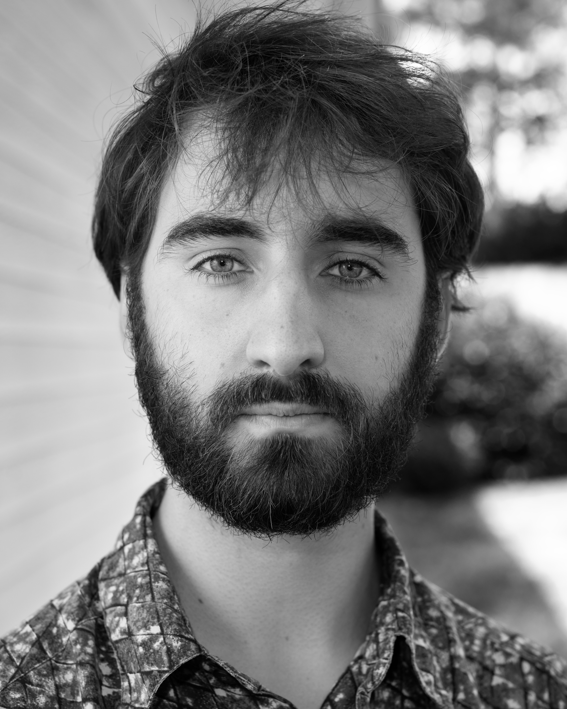

Lorin Dent Creative

My name is Lorin Dent and I was born and raised in Decatur, Ga. I was first introduced to photography at a young age with my siblings assisting our father on photo shoots. I also grew up in the ballet which nurtured an interest in dramatic, musical storytelling. I began making short films in middle school and have continued the practice since. In late high school I took up photography and studied the art form at Georgia State University. Since graduating in 2022 I have worked as a camera operator on a documentary following activist movements in Atlanta and as a freelance videographer, photographer, and set-builder.